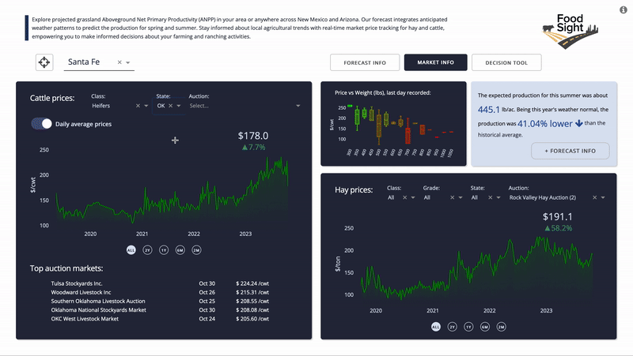

Introducing FoodSight: Bridging the Gap in Ranching Data Accessibility
In this post, I want to present to you the latest project I have been involved in. FoodSight, though still in its early development stages, is an ambitious platform aiming to integrate crucial ranching data. Over time, USDA and various research groups across several USA universities have unveiled invaluable datasets to aid ranchers in their daily operations. However, the true potential of this data, which can significantly ease the lives of ranchers and bolster decision-making in market or logistical operations, remains untapped due to accessibility challenges.
For instance, the Grasscast models from the University of Nebraska-Lincoln, which predict seasonal grassland productivity, are primarily available in static maps. These maps don’t provide a direct correlation with the climatic scenarios that inform them. Moreover, accessing the raw data can be a formidable task, especially for those unfamiliar with spatial data analysis. The situation is mirrored in ranching market data. While a plethora of independent websites offer data by state or auction market, the centralized information in USDA servers often remains elusive, especially for those unsure about extracting data from APIs.
Recognizing these challenges, FoodSight seeks to bridge the gap. Beyond offering additional tools for decision-making, our primary objective is to simplify informed decision-making for our users.
https://app.foodsight.org/
Contents
Forecast Information
The integration of the Grasscast model into FoodSight offers users a straightforward way to explore grassland productivity forecast data, taking into account current climate scenarios from NOAA’s Climate Prediction Center. Users can view a summary of the current seasonal conditions for spring and summer based on their location or a selected area on the map. The tool allows users to click on or draw areas to get an overview of grassland conditions. This includes expected average productivity in the region, a comparison with historical productivity, identification of years with similar conditions, and access to historical records. Furthermore, it provides a preliminary view of potentially better pasture locations based on the user’s selected location, catering to those who may not want to delve deep into the interactive map.

Market Information
Ranching operations are intrinsically linked to market pressures and demands. Providing access to market prices of cattle and hay complements decisions related to herd management. For those more interested in livestock markets than in ranching logistics, the page also offers easy access to the MyMarketNews API by the USDA. Users can get current cattle and hay prices, ensuring near real-time data. The platform consolidates information from various auction markets, offering a comprehensive market snapshot backed by USDA data, guaranteeing authenticity and accuracy.

Decision Support Tools
FoodSight is built around the central theme of a changing global climate and its escalating impact, such as intensified droughts, on ranching operations. The initial sections highlight these changes from two perspectives: the ecological impact on pastures and the consequential influence on market operations. In the “decision tool” section, insights from the previous sections converge, offering calculated suggestions for strategies to navigate drought events. Drawing from several strategies cited in the bibliography, the early version of the app delves into “Strategies for Beef Cattle Herds During Times of Drought” by Jeffrey E. Tranel, Rod Sharp, & John Deering of the Department of Agriculture and Business Management at Colorado State University. This tool is designed to help cow-calf producers weigh the financial consequences of various management approaches during droughts when grazing forage availability diminishes.

Technical aspects
At the heart of FoodSight is the interactive framework provided by Python Dash. Developed by Plotly, Dash has revolutionized the creation of analytical web applications by eliminating the need for complex JavaScript. The architecture’s innate interactivity empowers users to interact seamlessly with dynamic visuals, bringing data to life at their fingertips. For developers, the granular customizability of Dash components is a standout feature, allowing for sophisticated data exploration capabilities. This adaptability ensures that each user benefits from an intuitive experience. At its core, Dash leverages the power of Flask, React, and Plotly. This robust foundation ensures that FoodSight not only delivers visually appealing graphics but also remains agile and responsive, enhancing overall user satisfaction.
Additionally, to provide continuous access and peak performance, FoodSight is hosted on AWS Elastic Beanstalk. Among the additional AWS services utilized, there’s also an integration with Lambda functions, processing and formatting the market API data, to facilitate smoother and quicker data presentation.